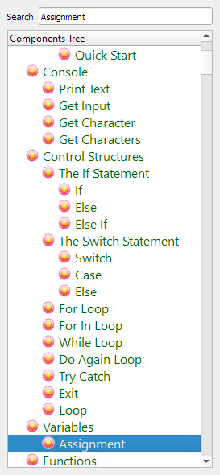
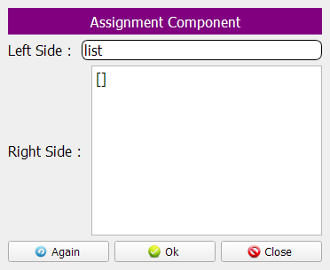
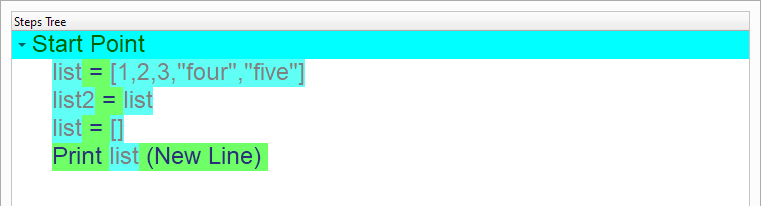
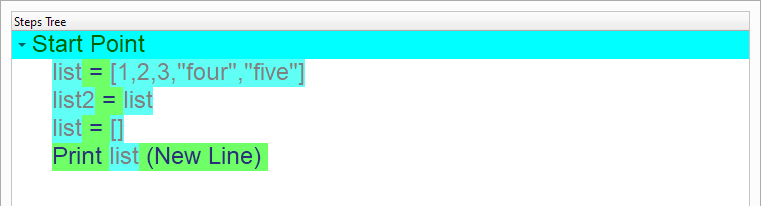
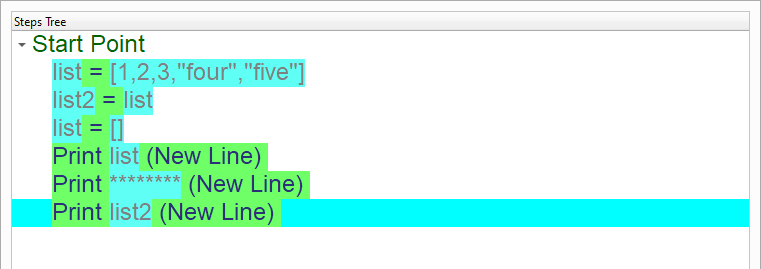

Deep Copy
In this chapter we are going to learn how to copy lists using the Assignment component
When we copy a list we have a Deep Copy (Copy by Value & Each copy is isolated)
Introduction
We can create this program quickly using the Quick Start component
Program Steps
After selecting the (Deep Copy) template, we will get the next steps in the Goal Designer
Creating the Program
To create this program we will use the next components
Assignment
Print Text
In the Start, The Steps Tree will be Empty

Select the (Assignment) component

We will define a list called (list)
The list will contains five items
The first three items are numbers (1,2,3)
The last two items are strings (“four”,”five”)
Left side: list
Right side: [1,2,3,”four”,”five”]
The Steps Tree will be updated
We will copy the List to another variable called (List2)

Enter the data to the Interaction Page
Left side: list2
Right side: list
The Steps Tree will be updated

Now we will set the First List to an Empty List (All items will be deleted)
Enter the data in the Interaction Page
Left side: list
Right side: []
The Steps Tree will be updated
We will print the First List (list)
 

We will print the Second List too (list2)

Select the (Print Text) component
Enter the data in the Interaction Page
Text: List2
Type: Expression
The Final Steps Tree
